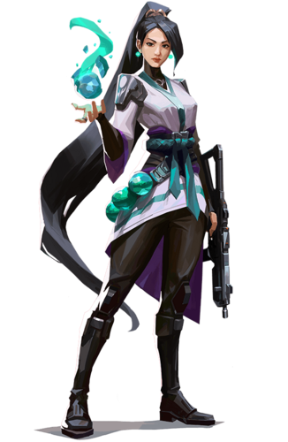

| Name |
Class |
Abilities |
Image |
| Raze |
Duelist |
Raze is always playful, impulsive, and spontaneous. She radiates chaotic energy and creates havoc on the battlefield, destroying every obstacle that is blocking her path. According to Sage, she can be impatient and won't stick to plans. |
 |
| Yoru |
Duelist |
Yoru is a duelist agent who specializes in faking out opponents and moving into unsuspecting positions. He has two abilities that allow him to move to a new location stealthily and another that is designed to make enemies think that he has moved. So keeping track of him is near impossible at times. |
 |
| Reyna |
Duelist |
Reyna has the passive ability of Soul Harvest, enemies killed by Reyna or her teammates leave behind Soul Orbs that lasts 3 seconds. Soul Harvest abilities consist of Devour and Dismiss which have a shared usage pool. |
 |
| Jett |
Duelist |
Jett is a fair-skinned, short girl, being the smallest of the VALORANT agents. She has white hair, which she ties in a bun on the back. Her bangs are rather long and remain stably locked. Her eyes are a shade of blue, and she looks like she wears eyeliner. Her clothes are all in shades and tints of blue, including her darkest pieces of apparel.
|
 |
| Cypher |
Sentinels |
If intel is your thing, Cypher might be your Agent. This Moroccan surveillance Agent has abilities that trap and reveal the locations of enemies that get stuck in them, as well as an actual spycam he can place on the map to watch the action from afar. His ultimate extracts information from a fresh enemy corpse to temporarily reveal the location of remaining players on the opposing team. |
 |
| Sage |
Sentinels |
Sage is a fair skinned, apparently tall woman with very long black hair that reaches her knees. Her inner clothing is black, and her outer, looser clothing is white. She also wears green, as a collar, belt and design on her outer clothing. For accessories, she wears her green orbs around her lower body and smaller ones as earrings. It's possible that they are Radianite, but there's no mention of them being anything more than cosmetics. |
 |